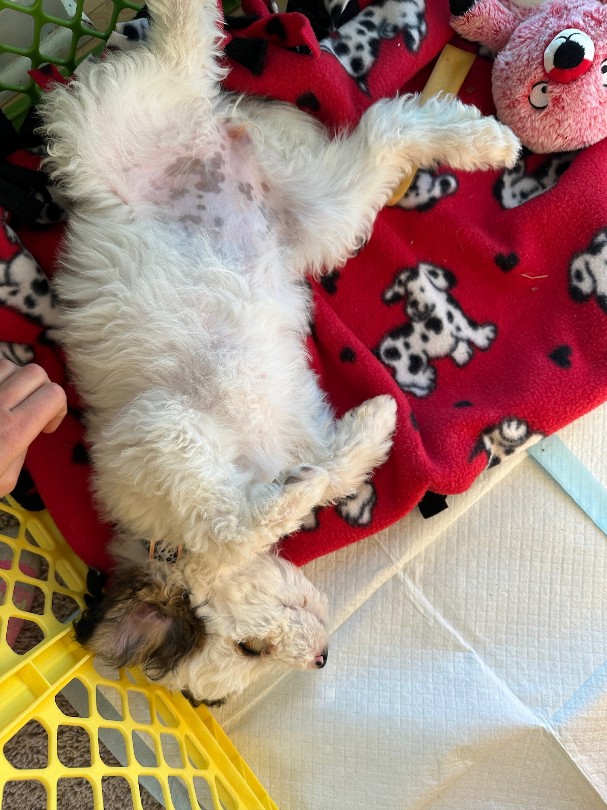
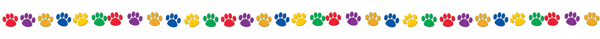
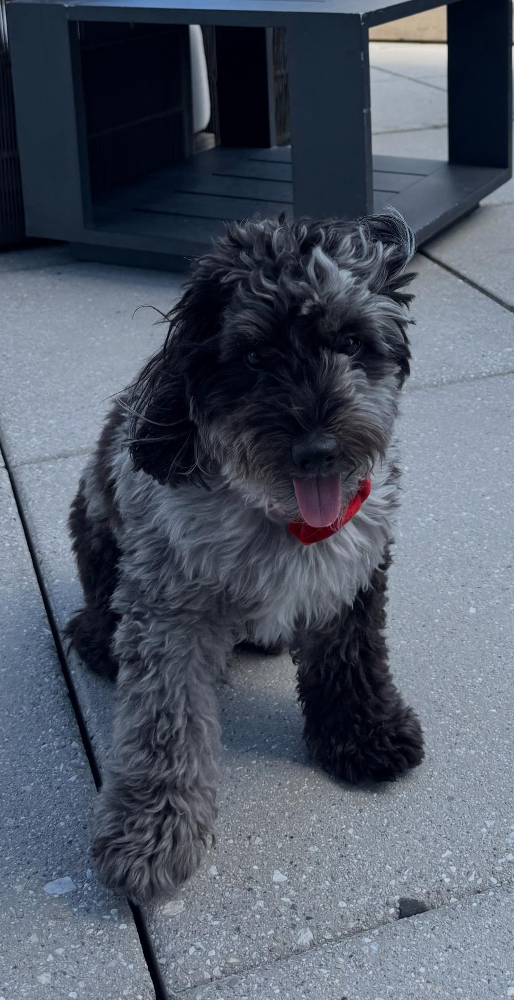
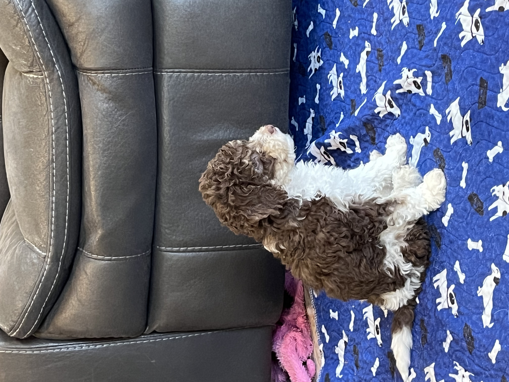
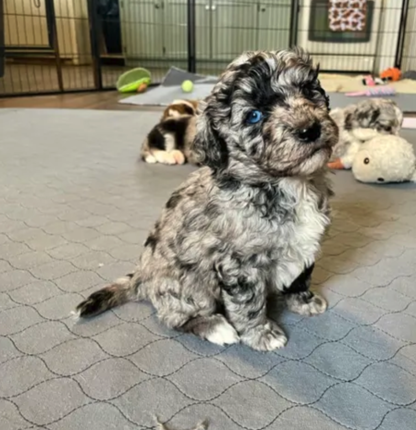

Reviews

Sarah W.
Doodle Dandy Review: Wow, what great service we have received from Susan!! I did not expect to be able to ask so many questions before and after adoption. We are so grateful for the tips and tricks! We also LOVE the Congrats file!! It is so full of information! We have referenced it time and time again! The gift bag is so generous as well. The Snuggle Puppy is such a huge blessing because our puppy sleeps and naps with it all the time. We really believe that helped our transition to home – especially because he was already used to it! The blanket that smells like their litter is also so wonderful. We have adopted a pup from another breeder before and the service was NOTHING like Susan’s. We received a small blanket when we left and that was nice, but they had Snuggle Puppies for sale (not as a gift). They would also not allow us to be in contact with other families that adopted from the same litter. The breeder contact mentioned there was another puppy adopted to our same town but they did not allow us to contact each other. It just felt very cold and sterile – nothing like Susan and Doodle Dandy. We appreciate that Susan is as available as we’d like her to be, she has always been very reachable and transparent. She’s also encouraged us to engage with other families. It’s so nice that we don’t have to feel as though she’s hiding something. So refreshing!!! Thank you, Susan!
 Cherizar W.
FIVE Stars... Susan changed my life with such an amazing pup. And thank you Chip and PZ for bringing Blitzen into this world. Susan's family went above and beyond ~ her son and friend drove Blitzen all the way to IL. I can tell her family raises their pups with a lot of love and attention. When we met Blitzen (3 mo. old) he would rest his nose on my nose and lock eyes the whole ride. Soon as we brought him home he would not stop with kisses :) Also ran through a tunnel (for agility training) without any training! Cannot wait to have fun with him and watch him grow. Susan included a gift bag that was perfect for the ride home (Blitzen loves sleeping on the cooling pad that has his mom's scent). We noticed my sister's dog was not shaking in the car for the first time because Blitzen was a role model - very calm in the car. They look like father and son, and are starting to mimic each other. Very grateful to Susan for this beautiful pup. When I wake up next to him and his "blizzard" hair I'm so grateful..
I found Susan through Good dog. I wanted to find a aussiedoodleer that was careful not to “overaussiedoodle” and really treated the puppies like a lover of dogs. Susan was very responsive to all my questions. She could answer all my questions without hesitation and it was clear she knew the Aussie doodle aussiedoodle. She worked with me on a date for pick up and was flexible when I needed to change that date. She FaceTimed me to allow me to see my puppy’s behavior & personality. I am very happy with Susan & with my sweet little Harper. She is happy, calm, & so loving. Very pleased with my sweet little girl!
Felicia B.
Our experience with Susan at Doodle Dandy was nothing short of wonderful! From the moment we began the process of bringing Oakley home, Susan was there every step of the way. She kept us informed with constant updates, sent photos, and answered all our questions thoroughly. It’s clear she truly cares about each puppy and each family she works with. Susan even went above and beyond to personally bring Oakley to us in Florida, making sure the transition was smooth. Now that Oakley is here, we’re completely smitten! He has the sweetest, calmest personality but is still so playful and fun. It’s obvious that Susan’s love and care have shaped him into the perfect addition to our family. We’re so grateful to Susan for her dedication, and we’d wholeheartedly recommend Doodle Dandy to anyone searching for their perfect pup!
